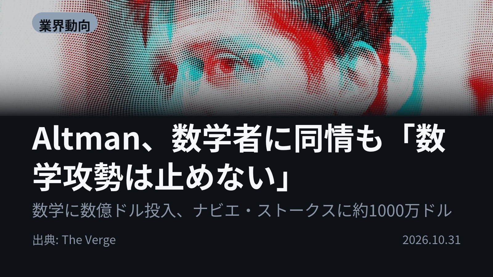
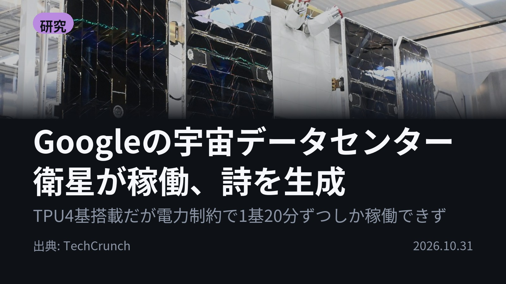
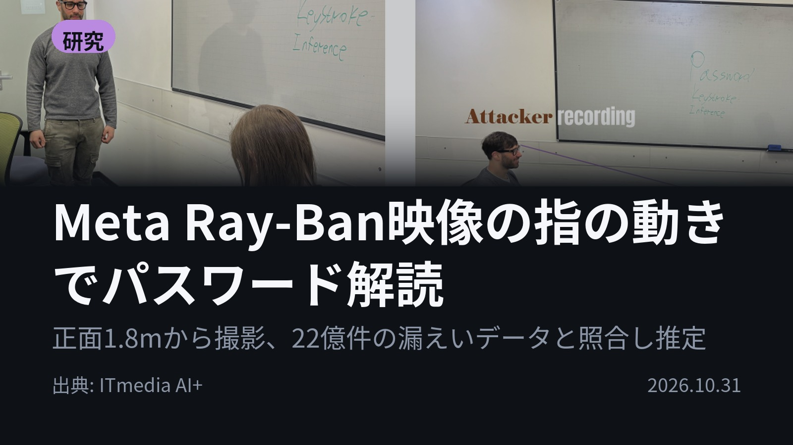
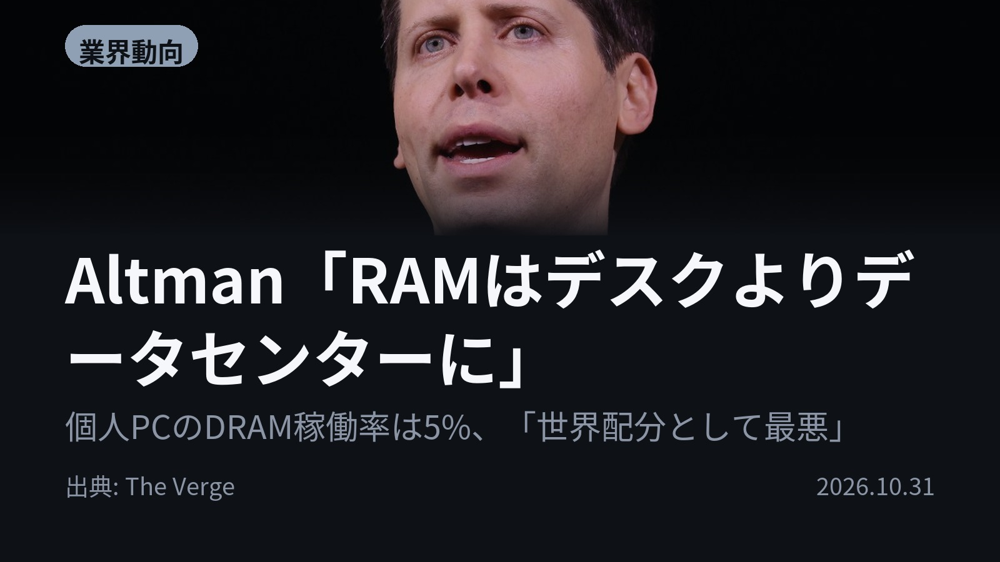
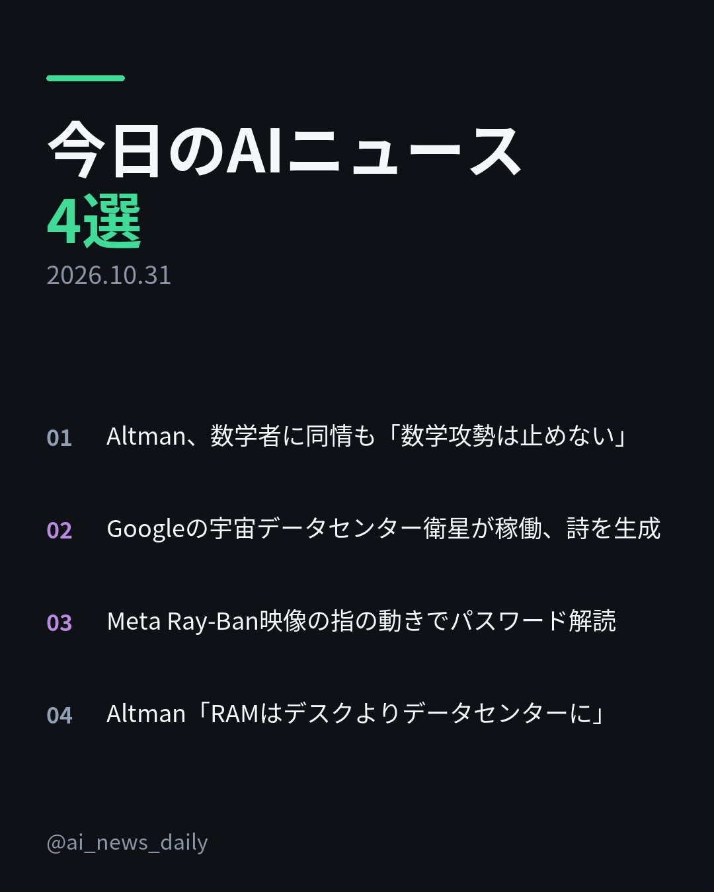
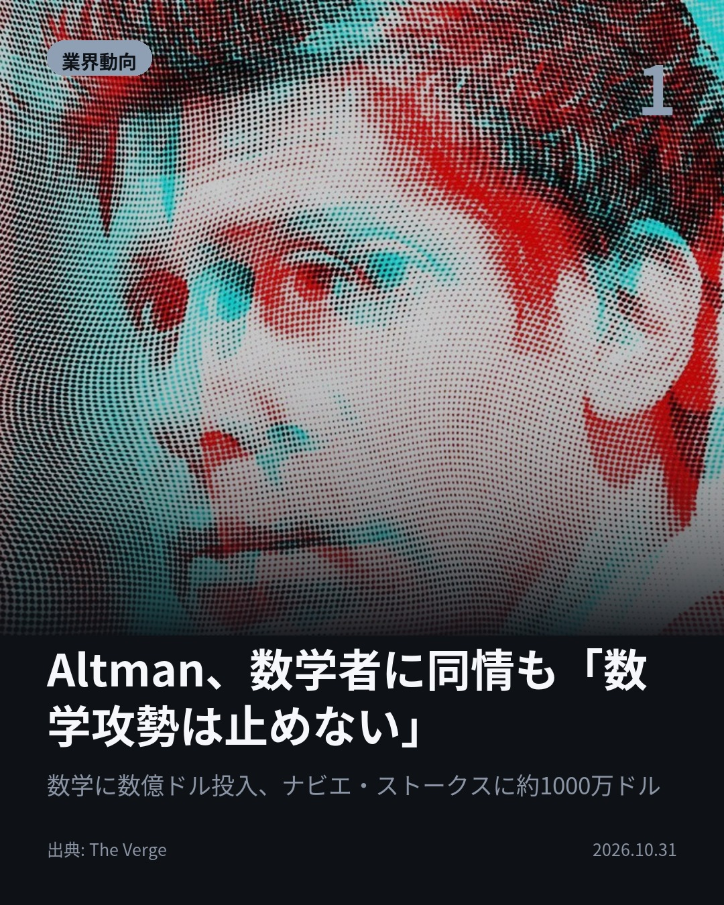
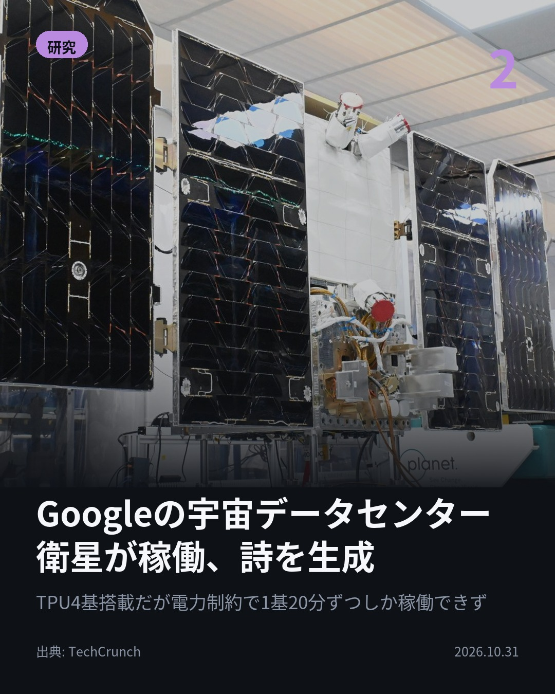
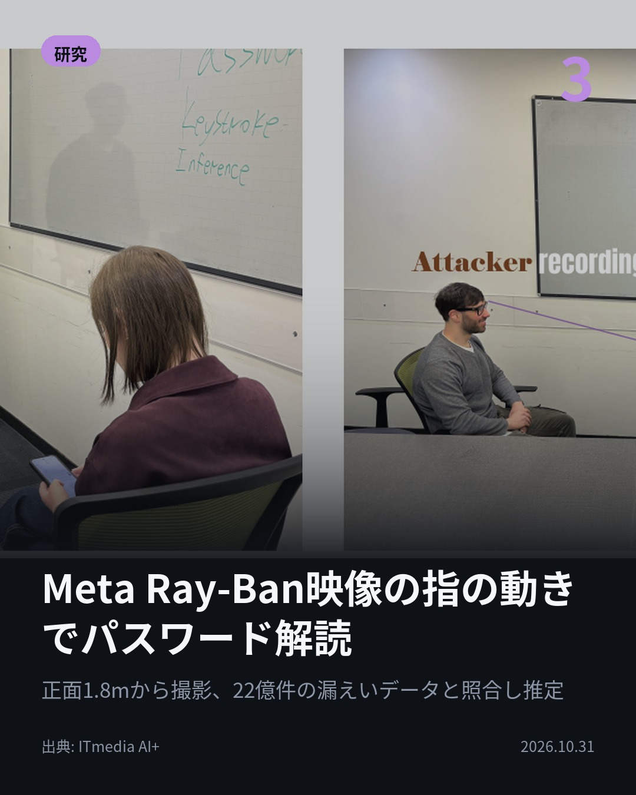
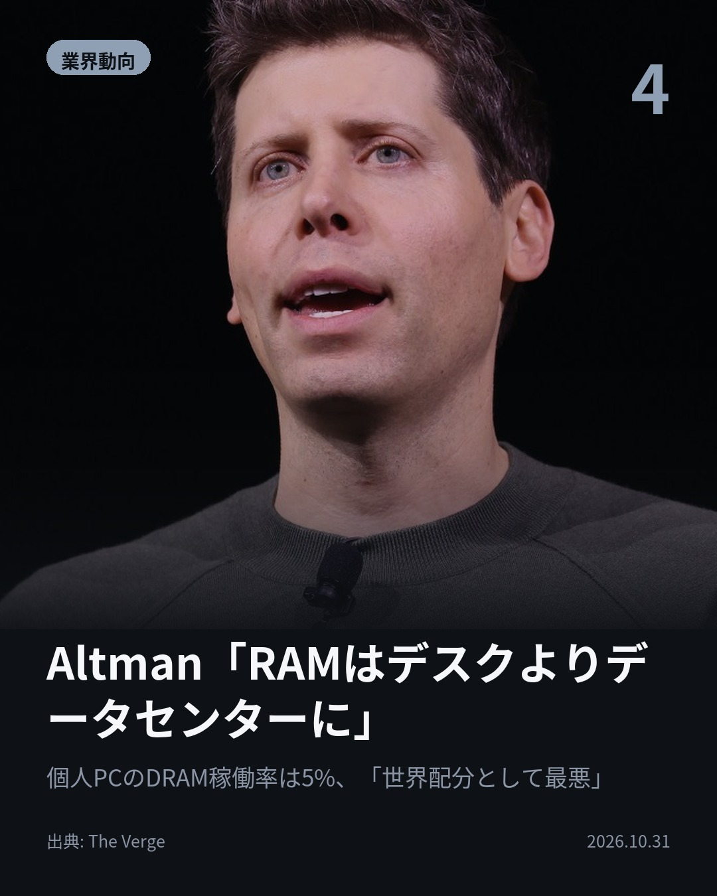

今日のAIニュース 下書き
2026-10-31 生成 11/01 00:53
⚠ 予備のLLM（ollama）で生成されました。
主バックエンドが使えなかったため、原稿の品質が普段より落ちている
可能性があります。いつもより念入りに確認してください。
理由: claude_code: DraftCopy として解釈できませんでした: 1 validation error for DraftCopy
Invalid JSON: expected `,` or `]` at line 1 column 4130 [type=json_invalid, input_value='{"posts":[{"article_id":...arning","DataCenter"]}}', input_type=str]
For
⚠ ファクト照合で要確認の項目があります。
各ニュースの警告を確認してから投稿してください。
X（4投稿）
Altman、数学者に同情も「数学攻勢は止めない」
原題: Sam Altman sympathizes with mathematicians, but says OpenAI’s math onslaught won’t stop

「数学攻勢は止めない」OpenAIのSam Altman氏が明言。 数億ドルを費やし、ナビエ・ストークス問題など多数の成果を発表。研究者からの批判がある中、知識公開の重要性を主張し、未公開の発見も多数あると示唆しました。 #生成AI #OpenAI （出典: The Verge）
重み 241 / 280（見た目 137字）
要確認:
［固有名詞］ストークス — この語が本文に見つかりません
［固有名詞］コミュニティ — この語が本文に見つかりません

Googleの宇宙データセンター衛星が稼働、詩を生成
原題: Google’s first data center satellite is online and writing poetry

Googleの宇宙データセンター衛星が稼働！🛰️ プロトタイプ衛星「Suncatcher」がオンラインとなり、詩生成を実証。宇宙でのAI活用が始まります。 搭載TPUは電力制約から1基あたり約20分稼働。今後は熱ストレスや宇宙放射線環境での性能評価が進められます。 #GoogleAI #宇宙技術 （出典: TechCrunch）
重み 282 / 280（見た目 161字） — 上限超過。手直しが必要です
要確認:
［固有名詞］データセンター — この語が本文に見つかりません
［固有名詞］プロトタイプ — この語が本文に見つかりません
［固有名詞］オンライン — この語が本文に見つかりません
［固有名詞］ストレス — この語が本文に見つかりません

Meta Ray-Ban映像の指の動きでパスワード解読
原題: Meta Ray-Banで向かいの席から撮影→指の動きからスマホのパスワードを解読する盗み見攻撃

指の動きだけでパスワードが解読される時代に。 スマートグラスで撮影された指の動きから、パスワードを推定する盗み見攻撃が実証されました。 のぞき見防止フィルムがあっても突破の可能性があり、撮影距離は最大1.8mまで有効です。 #セキュリティ #生成AI （出典: ITmedia AI+）
重み 263 / 280（見た目 139字）

Altman「RAMはデスクよりデータセンターに」
原題: Sam Altman says it’s better for RAM to be in a data center than on your desk

RAMはデスクよりデータセンターにあるべき？ OpenAIのSam Altman氏が、AIの計算リソースについて警鐘を鳴らしました。 個人PCでのDRAM稼働率は5%と「最悪」な状態。世界的なRAM供給が逼迫する中、クラウド利用の重要性を強調しています。 #AI #半導体 （出典: The Verge）
重み 253 / 280（見た目 148字）
要確認:
［数値］5% — この数値の根拠が本文に見つかりません
［固有名詞］データセンター — この語が本文に見つかりません
［固有名詞］リソース — この語が本文に見つかりません
［固有名詞］クラウド — この語が本文に見つかりません
［固有名詞］Verge — この語が本文に見つかりません

Instagram（カルーセル 6枚）


1. 表紙


2. ニュース


3. ニュース


4. ニュース


5. ニュース

6. CTA
AIの進化は、技術的な驚きと、社会的な課題を同時に突きつけています。 今日は、AIの「計算リソースの場所」から「プライバシーの脅威」まで、最先端の動きを4本まとめてお届けします。 1. まず、OpenAIのSam Altman氏が、AIによる数学的成果の発表を続けると明言。数億ドルを費やした「数学攻勢」は続く模様です。研究コミュニティの疲弊が指摘される一方、科学的知識の公開が「重い」と主張しています。(The Verge) 2. 次に、Googleのプロトタイプ衛星「Suncatcher」が稼働し、詩（俳句）を生成。宇宙でのAI活用が始まっています。搭載されたTPUは電力制約から1基あたり約20分稼働し、宇宙環境での性能評価が進められています。(TechCrunch) 3. そして、スマートグラスによる新たな脅威。研究者らが、スマートグラスで撮影された指の動きからパスワードを推定する盗み見攻撃を実証。のぞき見防止フィルムがあっても、指先の動きさえ録画されれば突破の可能性があり、撮影距離は最大1.8mまで有効です。(ITmedia AI+) 4. 最後に、AIの計算リソースの最適化について。Altman氏は、RAMが個人PCにあるよりもデータセンターにある方が「良い」と発言。世界的なRAM供給が逼迫する中、クラウド利用の重要性を強調しています。(The Verge) AIの進歩は目覚ましいですが、同時に「リソースの配分」や「プライバシー保護」といった、社会的なルール作りが急務であることが見えてきます。 今日のニュースが「AIの今」を理解する助けになれば幸いです。ぜひ保存して、最新情報をチェックしてください！ #AI #生成AI #人工知能 #テクノロジー #TechNews #AI活用 #半導体 #半導体不足 #サイバーセキュリティ #プライバシー #スマートグラス #GoogleDeepMind #OpenAI #宇宙開発 #衛星通信 #データセンター #LLM #MachineLearning #TechTrends #Innovation #AIethics #未来技術 #TechUpdate
920字（Instagram上限 2,200字）
この日の選定理由
Altman、数学者に同情も「数学攻勢は止めない」
AIによる科学的発見のコストと、それを受け止める研究コミュニティの疲弊が初めて数字とともに語られた。未公開の成果が大量にあるという発言は、今後の発表ラッシュを予告する。
Googleの宇宙データセンター衛星が稼働、詩を生成
宇宙データセンターの初号機が動いた一方、電力と放射線という物理的制約の厳しさも露わになった。Starshipの1800回飛行が必要という試算は、構想の遠さを物語る。
Meta Ray-Ban映像の指の動きでパスワード解読
のぞき見防止フィルムをしていても、正面からの撮影で指の動きだけからパスワードが推定される。眼鏡型カメラの普及で、公共の場でのパスワード入力そのものが脅威になる。
Altman「RAMはデスクよりデータセンターに」
メモリ不足でPCやスマホが値上がりする中、その原因側のトップがローカル推論の需要を真正面から否定した。ローカルAIかクラウドかという論争の構図が供給制約の観点で語られた。